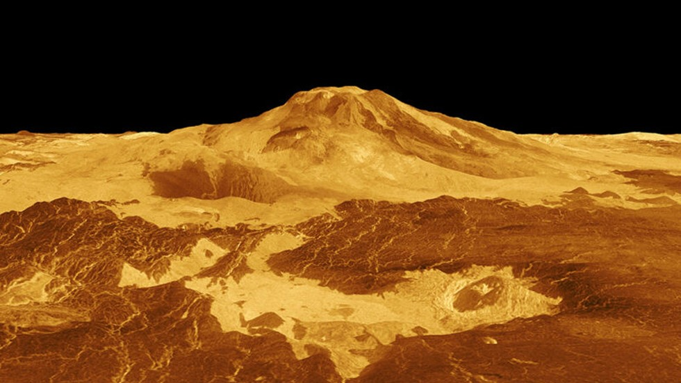
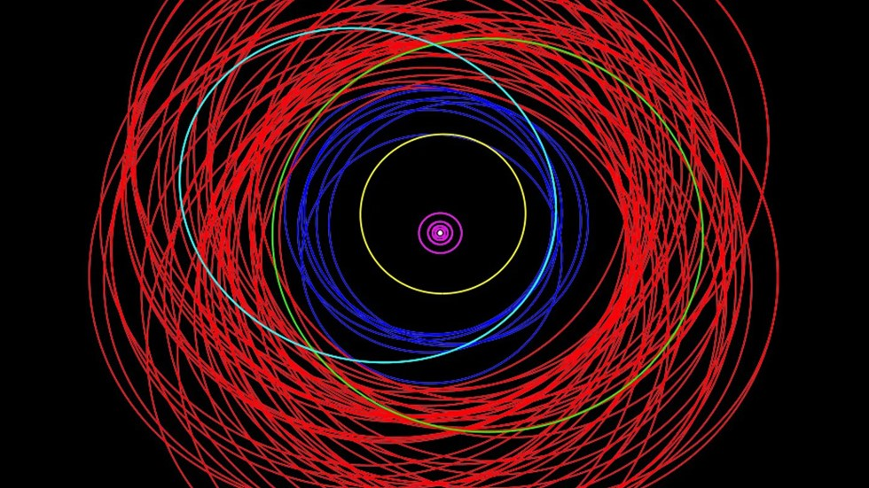
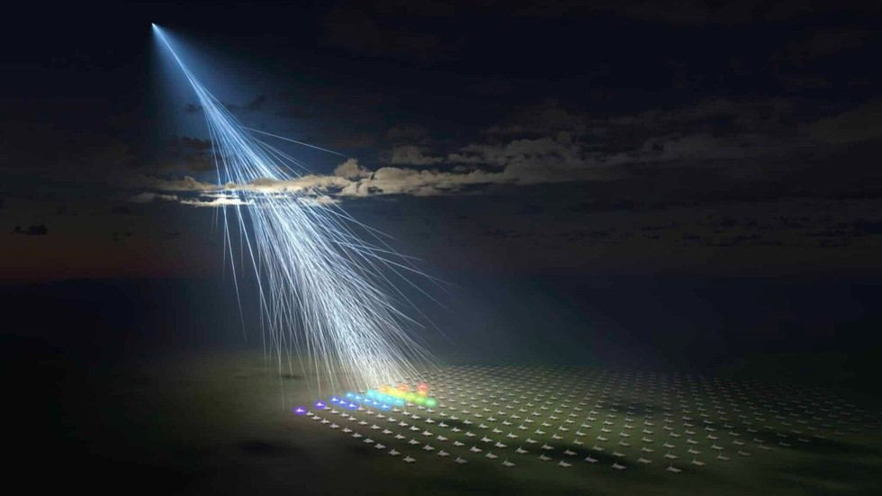

-КОСМИЧЕСКИЕ ОТКРЫТИЯ-

Уже давно известно, что вулканизм полностью восстановил поверхность Венеры в недавнем прошлом. А теперь есть доказательства того, что это актуально до сих пор.

Таким образом, общее количество спутников Юпитера достигает 92. Однако по этому параметру он все еще уступает Сатурну, у которого 146 известных спутников. Все вновь обнаруженные тела имеют размер всего несколько километров и могут быть фрагментами более крупных спутников, которые разрушились во время столкновения. Девять из них ретроградные, что означает, что направление их вращения противоположно направлению вращения центральной планеты.

Энергия частицы Аматерасу составила 2,4×102^⁰ эВ. Это в миллион раз превышает лучшие рукотворные достижения, полученные на Большом адронном коллайдере. Только фотон Oh-My-God, открытый в 1991 году, был более мощным. Прилет частицы был зафиксирован еще в мае 2021-го, но физическую интерпретацию этого уникального события ученые сделали только в 2023 году, причем решающую роль в этом сыграли специалисты из Института ядерных исследований РАН. Самое интересное в новой частице то, что она появилась, казалось бы, из ниоткуда. В той части неба, откуда она появилась, нет ничего, что могло бы ее породить, хотя ученые продолжают искать источник.